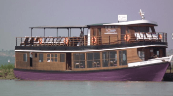

AMARA RIVER CRUISE AMARA RIVER CRUISE
The Amara River Cruise is a traditional Myanmar riverboat travelling along the Ayeyarwaddy River. It is made of teak wood and was completely refurbished by local craftsmen in 2003. It is 30 meters / 100 feet long and with a shallow draft of 1 meter / 3 feet and two Japan made 180hp Hino engines it can go as far north as Bhamo.The Amara River Cruise has a total of seven cabins, each with their own bathroom with hot and cold shower. Communal areas, bar and canopied sun deck. Electricity is provided by a generator and battery 24 hours a day. Safety is provided by smoke detectors in all cabins, emergency lighting, fire extinguishers, life jackets and a dinghy.Amenities include on-board laundry, fully equipped kitchen and refrigerators. All bed linen and towels as well as dining service and bar equipment are provided. You will be taken care of by our friendly and hospitable staff and be able to relax and enjoy the personal atmosphere on board.
RV PANDAW CRUISE
We have five luxury river cruise ships in operation that we built ourselves. Each ship, hand finished in brass and teak by traditional craftsmen are in themselves objects of great beauty. The secret of our success is that on our ships, whilst luxury and comfort are discreetly present, it is the colonial character and friendly atmosphere that predominate. All our Pandaws have ultra shallow drafts and can travel to remote areas unreachable by other vessels, let alone overland.
RV PAUKKN CRUISE RV PAUKKN CRUISE
The lovely Paukan is a boutique hotel on the river, beautifully furnished with a unique combination of modern and traditional motifs. The timber-walled cabins are furnished with colonial style cupboards, dresser and doors while the ceiling is traditional Myanmar. The single or double beds are proper and comfortable ones and not mere bunks, enough room for 55 passengers who will be looked after by a 30-member crew. For luxury-living, Paukan has suites, deluxe or superior cabins as well as singles for guest or guides. There are two massage rooms on the lower deck offering traditional Myanmar massage designed to give soothing relaxation.The sun deck has a stage for cultural performances, and a bar and lounge for relaxation and fun. The upper deck has a lecture / movie room with lcd projector and lcd TV screen. Meals in the dining room on the main deck will include both East and West cuisine, and dinner menus of delicious dishes. Vegetarian meals can be prepared when informed in advance.
RV ROAD TO MANDALAY
The Road To Mandalay offer passengers an enchanting view of the dramatic landscapes, ancient temples and fascinating riverside settlements along the Ayeyarwady River in Myanmar. As well as viewing the changing scenery, passengers will enjoy the highest international standards of comfort, cuisine and service onboard this elegant river cruiser operated by Orient-Express. The Observation Deck has a swimming pool, bar and sun deck area and provides, quite simply, the best views in Myanmar.The Road To Mandalay incorporates elegant Burmese materials and unique styles with high standards in decor and modern comfort. Facilities on board include a Restaurant, Piano Bar, Boutique, Beauty Salon, small Library and a spacious Lounge, where local entertainment and cultural lectures take place during the cruise. The Road to Mandalay can accommodate a maximum of 118 passengers in 3 different cabin types. All cabins are fully air-conditioned and have en suite shower and WC facilities. Each cabin has a personal safe, telephone and satellite TV with in-house video.
PRINCESS ROYAL RIVER CRUISE

The Princess Royal is a beautiful small boutique boat which consists of six Standard rooms on the main deck and a large Deluxe room on the sundeck . A variety of European and Asian dishes are available on board, all of which have been hygienically prepared by our experienced chef. Also available is a wide selection of alcoholic and non-alcoholic beverages from our bar until midnight. In the case of emergency on the cruise you will also be able to note our international-standard safety system. The journey on A setting in which you can forget about the stresses of life; that is like nothing you have ever seen before.Where the timeless pagodas as well as the tales of kings and queens of past will inspire the sense that you are cruising through time. The team here at our luxury cruise Princess Royal warmly invites you to come aboard our cruise and soak up scenery which will enchant you and take you to a whole different time. Our team on board is formed with knowledgeable and highly experienced members who have local and international experiences. Our cruise boat has the unique feature wherein you have a view from both sides of your cabin, one side even including your own balcony to enhance your experience.
RV YANDABO
The RV Yandabo is a small luxury cruise ship and proudly cruising between Mandalay and Bagan on Ayeyarwaddy River. She will offer you to enjoy extraordinary high-standard service. Yandabo provides for your cruising pleasure with air-conditioned dining room, bathrooms with shower attach. Delicious meals ; Chinese, Local and Western dishes are prepared by our experience chef and many kind of drinks, tropical fruit cocktails are available at promenade deck bar.Yandabo is the name of beautiful pottery village,Historically recongnized for the signing of the Yandabo Treaty which took place under a tree on the riverbank in 1826, between the British and Royal Burmese House-hold of Ava. The Yandabo is built for passenger’s safety and comfortable as beautiful design in promenade and fine dining room. We would like to give you the best of the best service when you are cruising with us.
IRRAWADDY PRINCESS II
Irrawaddy Princess II River Cruise is a traditional Myanmar riverboat traveling along the Irrawaddy River. Built in 1998 and It is measure 134′ x 34′ x 6’6” moulded depth with three decks. Board the Irrawaddy Princess on any of her weekly cruise between Mandalay and Bagan and enjoy the greatest travel experiences on the legendary river “The Irrawaddy”. Irrawaddy Princess II has a total of 20 cabins, all attach with their own bathroom with hot and cold shower.“Irrawaddy Princess II” provides for your cruising pleasure with fully air-conditioned comfortable rooms with all standard facilities including mini bar, bed linen and towels and as well as dining service. Delicious local, Chinese cuisine and western dishes are prepared by our experience chef and many kinds of drinks, tropical fruit cocktails are available at Sundeck bar.
MERGUI PRINCESS
Mergui Princess Cruise (1) is newly live aboard which can be accommodated maximum 6 passengers. All cabins onboard are air-conditioned and offering great sea view. She has one queen size bed and one bunk bed room with en suite bathroom are on the main deck and one twin bed room without en suite bathroom is on the upper deck.